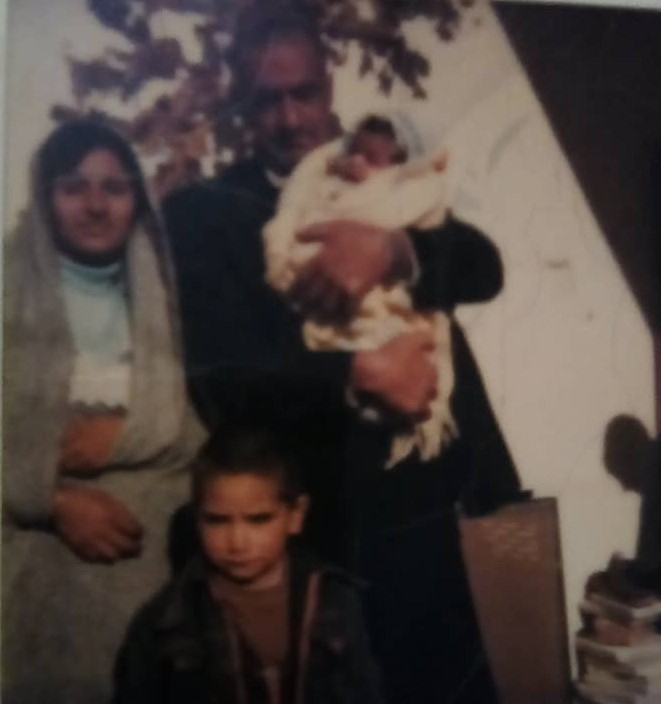
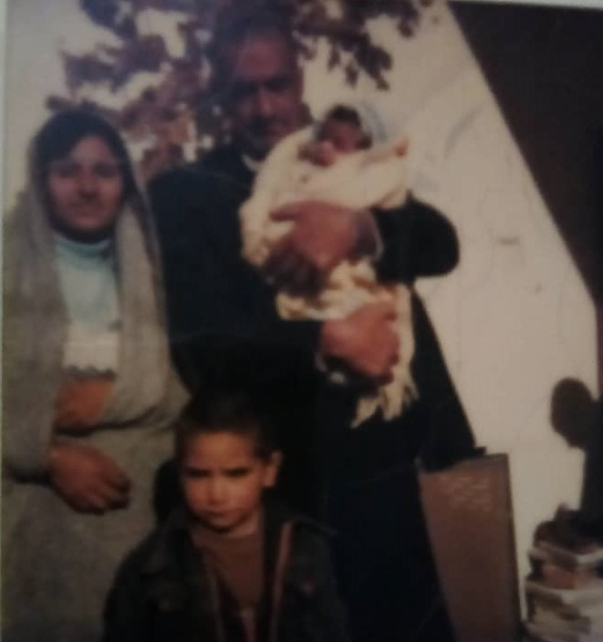
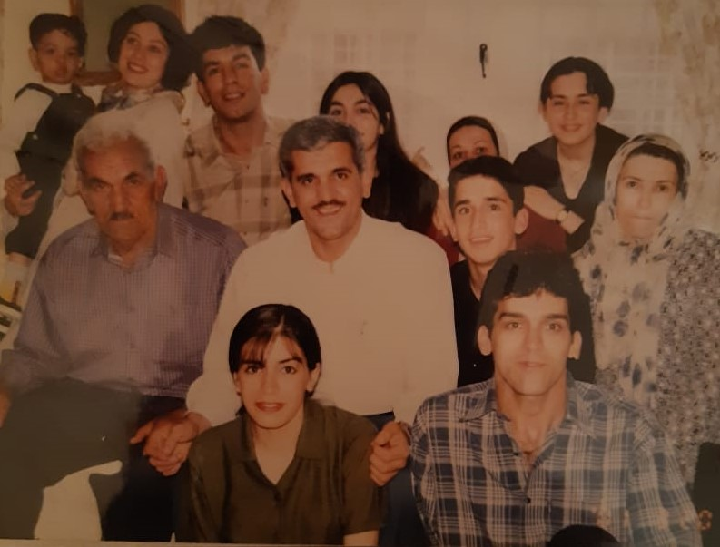
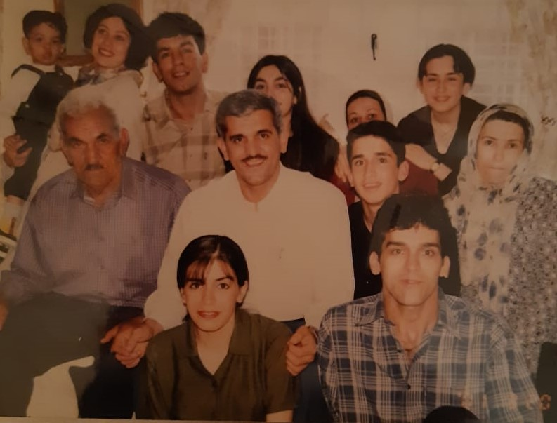

 



تعریف شجره نامه:
شجره نامه قبل تر ها معمولا در بیشتر مورد در خصوص شناسایی سادات به کار می رفته است، و به آن تبارنامه، دودمانه یا نسب نامه نیز می گویند. اما در دنیای امروز کاربردهای متفاوتی از شجره ها نامه ها ارائه شده است. ین طور می توان گفت که تبارنامه یا شجرهنامه یا دودمانه یا نسبنامه فهرستی منظم است که نسبت افراد با همدیگر را نشان میدهد؛ یکی از رایجترین نسبتها، نسبت پدر و فرزندیاست که در این گونه تبارنامه یا شجره نامه متعلق به یک خانواده نام پدران و فرزندان را به ترتیب پشت سر هم قرار میدهند و دوره زندگی هر فرد را تا وقتی که جای خود را به دیگری بدهد، نسل مینامند که واژه آن به معنی فرزند آمده است. دانستن این نکته نیز خالی از لطف نیست که تبارنامه فقط دربردارنده فهرست پدران و فرزندان نیست و بلکه می توان نسبت های دیگری از جمله برادری را در آن نشان داد. مثلاً پس از گذشت یک نسل، برادران برای نسلهای بعدی به صورت عمو درخواهند آمد و در تبارنامه پدران و فرزندان پشت سرهم قرار میگیرند؛ در حالی که برادران در یک ردیف در کنار هم واقع میشوند. معمولا یک تبارنامه شامل گروهی از انسانهاست که با یکدیگر پیوند خویشاوندی دارند. و بیانگر نسبت انسانها با یکدیگر است. بدیهی است که نسبنامه سادهترین وسیله برای نشاندادن روابط افراد خویشاوند اعم از خویشاوندان نسبی و خویشاوند سببی خواهد بود. از دیگر کاربردهای شجره نامه شناخت رویدادهای تاریخی و نیز نشان دادن ترتیب افراد فرمانروایان و حاکمان می باشد. همچنین بازشناسی افراد هم نام از یکدیگر نیز از کاربردهای تبارنامه ها بوده است که البته هنوز هم این روش بازشناسی در میان اعراب مرسوم و متداول است. جالب است بدانید که در میان تبارنامه ها، شجره نامه های جعلی نیز وجود دارند که در آن شخص خود را به دروغ به خاندان بزرگی منتسب کردهاست. و مطلب جالب تر اینکه در برخی موارد دیده شده که برای اتحاد بین خانوادهها، دو قبیله ادعا میکردهاند که نیای آنها یکیاست.